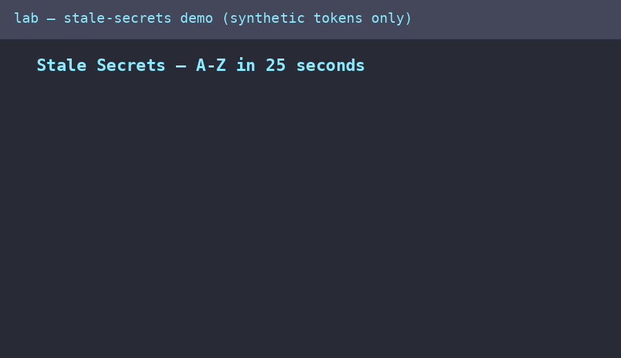

HEAD does not erase it from historyStart here if you are new: in 2014 and again in 2016, attackers broke into Uber with a valid key someone had left in GitHub — no zero-day needed. This site turns that story into something you can run yourself in minutes: leak a fake key, find it with Gitleaks, recover it from history, use it against a demo API, then fix it the right way (rotate first, purge second) and prove the fix. Read this page top to bottom and you will know more than most interview candidates about secrets in git.
Start the beginner path Jump to the quiz Run the lab
Progress is saved in your browser (localStorage). Nothing leaves your machine.

GIF plays automatically and loops. It supplements — never replaces — the written steps below. If images do not load, every command is also printed as text you can copy.
Git never forgets a commit you pushed. Deleting .env in a new commit only hides it from the latest files. The old commit — with the secret — stays reachable until history itself is rewritten and everyone re-clones. Attackers know this. Scanners like Gitleaks know this too: gitleaks git reads git log -p, not just the files you see today.
Therefore the fix has an order: 1. revoke / rotate → 2. audit → 3. purge history → 4. prevent. Purging without rotating is theater: someone already copied the key.
Let us work this out in a step-by-step way to be sure we have the right answer. Seven tiny steps, each with a command you can run in the lab.
A secret is anything that proves who you are to a computer: an API token, a password, a private key. If it leaks, anyone holding the string becomes you as far as the server is concerned. That is why the demo API accepts a Bearer token: possession equals access.
git clone <company repo> && cd demo
You see a normal website repo. Nothing looks wrong — exactly the point.
gitleaks git --redact --verbose .
--redact hides secret values from logs (otherwise the scan leaks the leak). A finding includes the commit hash — proof it came from history.
git show <commit>:.env
Shows the file as it looked then. The current folder still has no .env. Deletion ≠ erasure.
curl -H "Authorization: Bearer <token>" http://localhost:8042/api/customers
200 OK with customer records. You did not exploit a bug — the server let you in as an authorized user.
Change the valid token on the server (VALID_API_TOKEN). The old token now returns 401 even though it is still written in history. You cannot make attackers forget — you make what they remember worthless.
git filter-repo --replace-text passwords.txt --force git log --all -- .env # path may remain; secret bytes must be gone gitleaks git --redact . # expect: no leaks found
Force-push, teammates re-clone (never pull-then-push, or the secret returns). Re-clone and rescan as a new attacker: zero findings, old token 401.
docker compose up --build -d docker compose exec lab bash /work/experiments/run_all.sh # step by step instead: ./experiments/00_make_vulnerable_repo.sh ./experiments/01_gitleaks_detect.sh /tmp/vuln_repos/definitelysecure-demo ./experiments/02_git_show_history.sh /tmp/vuln_repos/definitelysecure-demo ./experiments/03_api_auth_repro.sh ds_live_leaked_demo_token_2026_ROTATE_ME ./experiments/04_rotate_and_clean.sh /tmp/vuln_repos/definitelysecure-demo OLD NEW ./experiments/05_rescan_verify.sh /tmp/vuln_repos/definitelysecure-demo OLD python3 benchmarks/benchmark_matrix.py python3 benchmarks/live_market_verify.py --offline
All tokens in this repo are synthetic (ds_live_* lab format). The study repo scans clean with its own config; only the throwaway demo repos under /tmp ever contain the lab token in a .env.
Checklist state is stored locally in your browser.
Pick an answer; you get instant feedback plus the reason. Score ≥ 8/10 = pro. Progress saves locally.
Score: 0/10
| Fact | Value |
|---|---|
| 2014 breach (public-repo key) | >100,000 driver records |
| 2016 breach (private-repo key) | 57M rider/driver records |
| Cover-up payment / disclosure delay | $100,000 · >1 year |
| Settlement / oversight | $148M · 20-year FTC order |
| Gitleaks recall / precision (published) | 88% / 46% — fast gate, needs verifier stage |
| SecretBench scale | 97,479 secrets (15,084 true), 818 repos, 49 languages |
| Market anchor (2026-10-15) | UBER $69.69 · fine ≈ 0.28% of 2025 revenue |
Full citations live in paper/REFERENCES.bib in the repo.
docs/index.html (also copied as preview.html).main, folder /docs, Save. (Alternative: Source GitHub Actions with the included .github/workflows/pages.yml.)https://<you>.github.io/<repo>/. A .nojekyll file is included so plain HTML (including the GIF) is served as-is.